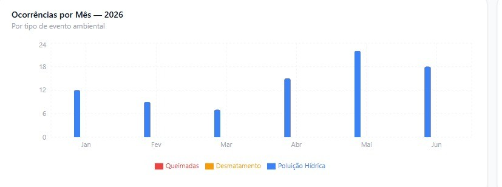
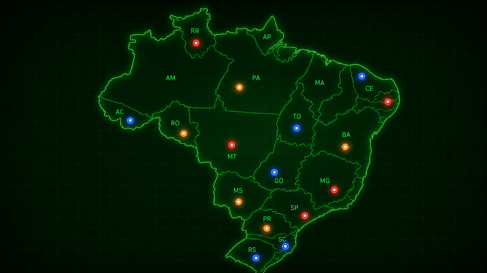

Dashboard
Visão geral do monitoramento ambiental
127
Queimadas
64
Desmatamentos
19
Poluição Hídrica
12
Satélites Ativos
Alertas da Semana

Mapa de Monitoramento

Eventos Recentes
| ID | Evento | Localização | Status | Horário |
|---|---|---|---|---|
| #001 | Queimada | Amazonas | Crítico | 10:42 |
| #002 | Desmatamento | Pará | Médio | 09:12 |
| #003 | Poluição Hídrica | Pantanal | Baixo | 08:27 |
| #004 | Queimada | Mato Grosso | Alto | 07:44 |
| #005 | Desmatamento | Rondônia | Médio | 06:53 |
Últimos Relatórios
- Relatório Amazônia.pdf
- Relatório Cerrado.pdf
- Relatório Pantanal.pdf
Atividades Recentes
- Novo alerta emitido.
- Relatório atualizado.
- Satélite sincronizado.
- Nova região adicionada.